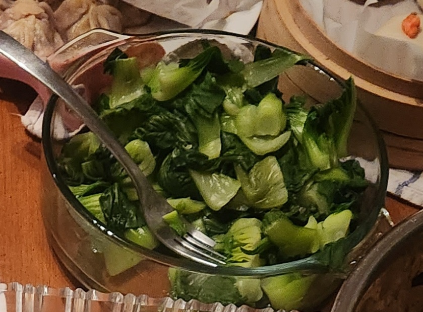

Blanched Bokchoy

Description
Honestly pretty mid but it gets the job done.
Ingredients:
- 3 cups of water
- 1 bag of bokchoy
Steps:
- Wash the bokchoy and cut in half.
- Boil water
- Place bokchoy in boiling water and let cook for 3 minutes.
- Drain water and serve. Extra yummers with a garlic sauce.